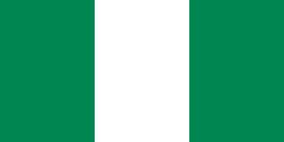

Nigeria
A Nigéria, oficialmente República Federal da Nigéria (em inglês: Federal Republic of Nigeria), é uma república constitucional federal que compreende 36 estados e o Território da Capital Federal. O país está localizado na África Ocidental e compartilha fronteiras terrestres com a República do Benim a oeste; com Chade e Camarões a leste e com o Níger ao norte. Sua costa encontra-se ao sul, no Golfo da Guiné, no Oceano Atlântico. Por muito tempo a sede de inúmeros reinos e impérios, o Estado moderno da Nigéria tem suas origens na colonização britânica da região durante final do século XIX a início do XX, surgindo a partir da combinação de dois protetorados britânicos vizinhos: o Protetorado Sul e o Protetorado Norte da Nigéria. Os britânicos criaram estruturas administrativas e legais, mantendo as chefias tradicionais. O país tornou-se independente em 1960, mas mergulhou em uma guerra civil, vários anos depois. Desde então, alternaram-se no comando da nação governos civis democraticamente eleitos e ditaduras militares, sendo que apenas as eleições presidenciais de 2011 foram consideradas as primeiras a serem realizadas de maneira razoavelmente livre e justa.[6]